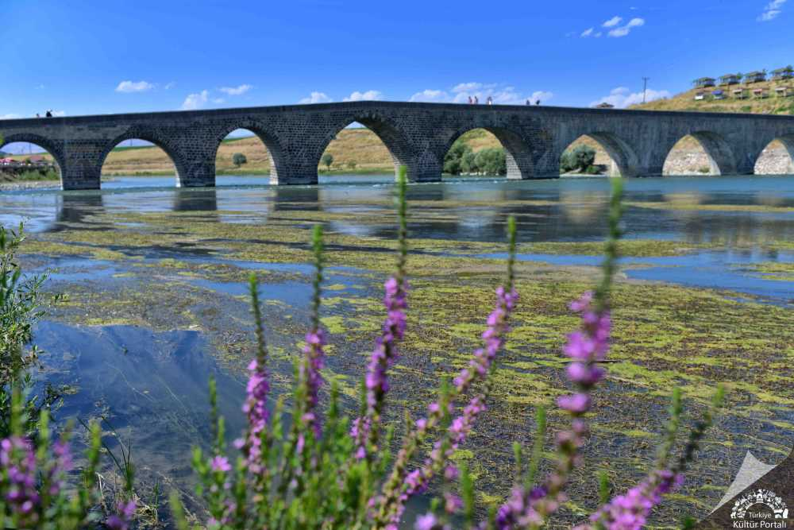
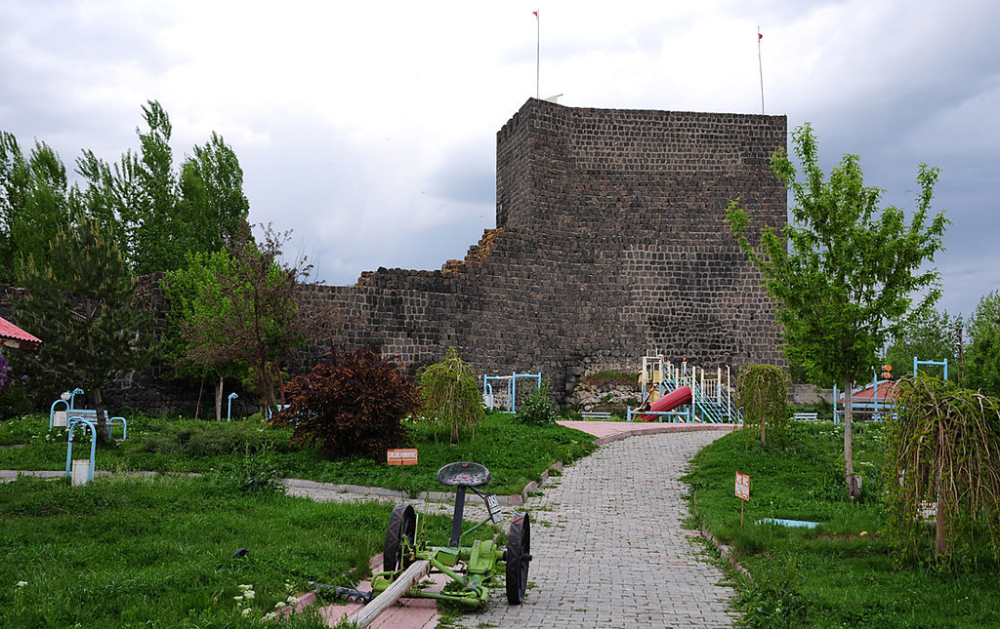
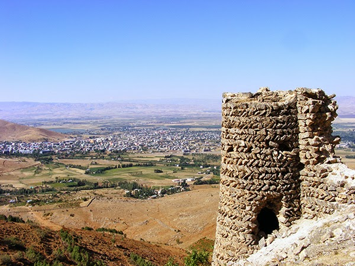

Tarihin Başladığı Yer: Muş'a Hoş Geldiniz





Şehir Bilgileri
Nüfus: Yaklaşık 400 Bin
1071 yılında Anadolu'nun kapılarının Türklere açıldığı, tarihi Malazgirt Zaferi'ne ev sahipliği yapan, eşsiz doğası ve uçsuz bucaksız ovasıyla doğunun en kıymetli incilerinden biri olan Muş.
Gezilecek Yerler:
- Tarihi Murat Köprüsü
- Malazgirt Meydan Muharebesi Tarihi Milli Parkı
- Muş Kalesi
- Yıldızlı Han ve Tarihi Çarşılar
Mirasımız ve Takımımız
Kültürel Mirasımız: Muş Ovası'nın o meşhur Muş Lalesi, damak çatlatan Muş Köftesi, Ayran Aşı ve dillerden düşmeyen "Burası Muş'tur" türküsü bu şehrin paha biçilemez kültürel mirasıdır.
Muşspor (1984 Muşspor)
Sarı-beyaz renklere gönül vermiş, ovasının bereketi ve insanının sıcaklığıyla tribünleri dolduran, şehrimizin en büyük spor değeri ve gurur kaynağıdır.